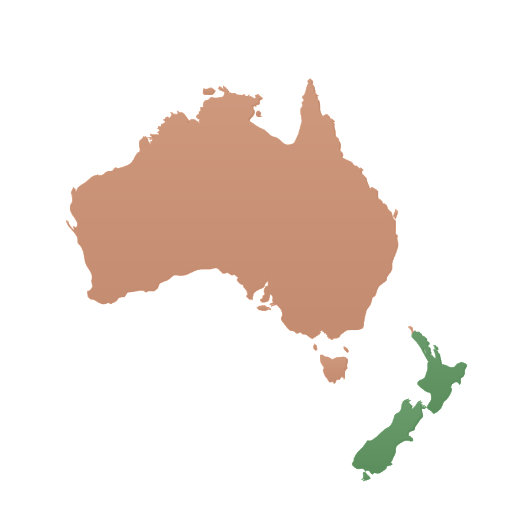

Every guide, in one place
Registration, visas, the CV, the costs, the schools and the first few weeks, brought together in one place. Choose your country to begin.
Free to read online, and the longer ones can be downloaded as a PDF. Useful stuff. No sales pitch.

Rather start by doing?
Each takes a couple of minutes and asks nothing personal. Start with your registration. It is the answer most other decisions depend on.
Nothing matches that yet. Try a different word or filter, or ask us directly. We’re happy to point you to the right place.
01DecidingBefore you apply
Is this actually right for us?
The honest picture of each country, how they compare, and what the healthcare system is like before you commit to anything.New Zealand
About New Zealand
A gentle introduction to Aotearoa: its history, Te Tiriti, tikanga and a few words of te reo.
Read online The systemHealthcare in New Zealand
How care is organised, who is eligible, what everyday care costs and where to find support.
Read online The practicePractising in Australia
Who funds care, eight systems under one registration, cultural safety and Closing the Gap, remote practice, and what feels different for a clinician arriving from another system.
Read online The practicePractising in Aotearoa New Zealand
The priorities you would be expected to work to, culture and care, rural practice, and what feels different for a clinician arriving from another system.
Read online All regionsExplore the regions
Ten destination guides: what daily life, housing and costs look like, from the big cities to the quieter corners.
Browse destinationsAustralia
Healthcare in Australia
How Medicare and the public hospital system are organised, who’s eligible, what everyday care costs and where to find support.
Read online All statesExplore the states & territories
Eight state and territory guides: what daily life, housing and costs look like, from the big cities to the outback.
Browse destinationsBoth countries
Australia or New Zealand?
An honest, side-by-side look at the health systems, registration, visas, pay and lifestyle, so you can decide which country fits you and your family.
Read online Decision guide · GPsGPs: Australia or New Zealand?
How general practice is funded and organised in each country, what you can earn, the registration pathways, and where you could realistically live.
Read online Decision guide · RadiologistsRadiologists: Australia or New Zealand?
Market scale, public versus private practice, earning potential, subspecialty scope and the RANZCR registration pathways in each country.
Read online Decision guide · SonographersSonographers: Australia or New Zealand?
Two different regulatory systems, two different markets. ASMIRT and ASAR accreditation against MRT Board registration, and what each means for your week.
Read online The money guideWhere will your salary go further?
Australia usually pays more, but a higher salary isn’t more money. Super and KiwiSaver, housing, commuting, family costs and relocation support, weighed honestly.
Read online02Registration & payBefore you apply
Can I work there, and what would I earn?
Your regulator, the route for your profession, and what the published pay scales actually say.New Zealand
Australia
Looking for a different healthcare profession? The guides above cover the professions we recruit into. If yours is not one of them, you can go straight to the body that registers you — view official healthcare regulators.
03CV & interviewsBefore you apply
How do I present my experience?
What employers in each country expect, and tools to check your CV before you send it.New Zealand
Australia
From here, an offer sets the pace
The first three steps are yours to do at your own pace, and they are worth doing early, registration especially. Everything from here is triggered by an offer: the visa application needs one, and so does a real shipping quote. If you are at that point, a plan beats a library — build your plan and we will keep the steps in order for you.
04VisasOnce you have an offer
Which route applies to me and my family?
The main pathways, what they mean for a partner and children, and how residence follows.05Preparing to moveOnce you have an offer
What do I actually have to organise?
Costs, shipping, flights, pets, schools and the paperwork that has to happen before you fly.New Zealand
Bringing pets to New Zealand
MPI import health standards, the rabies and microchip timeline, quarantine at Auckland, what the flight is like, and finding a pet-friendly rental.
Read online 05 Preparing to moveFlights, banking, schools & first weeks NZ Moving to New ZealandHealthcare, banking, housing & first weeks GuideAustralia
Bringing pets to Australia
Department of Agriculture import permits, the rabies titre timeline, mandatory quarantine at Mickleham, restricted breeds, costs and the flight itself.
Read online 05 Preparing to moveFlights, banking, schools & first weeks AU Will I pay school fees?Temporary visas, state by state AU Moving to AustraliaHealthcare, visas, the eight states & first weeks Guide06Settling inAfter you land
What are the first months like?
Everyday life, schools, community and the people who make a new country feel like yours.New Zealand
Renting in New Zealand
Your application pack, bond, tenancy rights and the Healthy Homes standards, plus the scams to watch for.
Read online Everyday lifeMoney, tax & banking
Your IRD number, opening an account, KiwiSaver and the early tasks that get your finances running.
Read online Everyday lifeDriving & licences
Driving on your overseas licence, converting to a New Zealand one, and what the roads here are actually like.
Read online ReferenceUseful contacts & community
The official bodies, regulators and everyday-life links worth bookmarking, all in one place.
Read online EducationEducation in New Zealand
Schools, enrolment zones, NCEA and early childhood: how learning works for children of every age.
Read online Family lifeMoving with your family
Reassuring tips for the long flight and the first weeks, helping little ones find their feet.
Read online Full guideReligion, community & belonging
The complete guide to finding your people: faith, culture, an inclusive welcome, a taste of home and how to settle into a community.
Read onlineAustralia
Renting in Australia
No national tenancy law: your state’s rulebook, competing for a lease with no Australian rental history, and what “unfurnished” really means.
Read online Everyday lifeMoney, tax & banking
Your TFN, choosing a super fund, the Medicare levy exemption people miss, and why tax residency is not the same as your visa.
Read online Everyday lifeDriving & licences
Converting your licence state by state, the deadline tied to permanent residency, and how compulsory third party insurance works.
Read online ReferenceUseful contacts & community
The official bodies, regulators and everyday-life links worth bookmarking, all in one place.
Read online EducationEducation in Australia
Schools, enrolment, the senior years and early learning: how education works for children of every age.
Read online Family lifeMoving with your family
Reassuring tips for the long flight and the first weeks, helping little ones find their feet.
Read online DirectoryCommunities & support networks
A curated directory for Australia: professional groups, diaspora, festivals, LGBTQIA+, faith, accessibility and wellbeing support, gathered in one place.
Browse the directory Full guideReligion, community & belonging
The complete Australia guide to finding your people: faith, culture, an honest look at diversity by place, an inclusive welcome and a taste of home.
Read onlineSome questions are better answered by a person
A guide can explain registration, visas and pay. It can’t tell you how the first fortnight actually felt, or whether the school run really works from that suburb. For those, ask someone who has already done it.
Can’t see what you need? Ask us. We’ll point you to it, or write it.